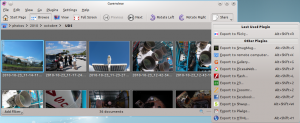

A common complaint I hear about Gwenview is that sharing an image on Facebook, Flickr or other services is difficult because the feature is buried too deeply in the menu hierarchy. So, hot on the heels of KSnapshot, I made the export plugins easier to reach. There is now a "Share" button in the toolbar:
When you click it for the first time, you get a list of all KIPI export plugins:
Gwenview likes to pretend it is smart, so next time you click the Share button, it will remember the last plugin you used:
I find it quite useful even if it is not perfect yet: The button uses the "document-export" icon for now, for lack of a more adapted one. In these days of social computing, maybe we need a generic "document-share" icon? (Nuno, are you here? :)) I also bumped into some limitations of the KIPI API while implementing this, such as the inability to know the category of a plugin without loading it. Actually the API makes it possible for one plugin to expose actions in multiple categories... This means Gwenview must load all plugins to populate the menu when you click the button. I had an idea in mind a few years ago to address that issue, maybe I'll resurrect it.
{kind=link}
{kind=link}
{kind=link}